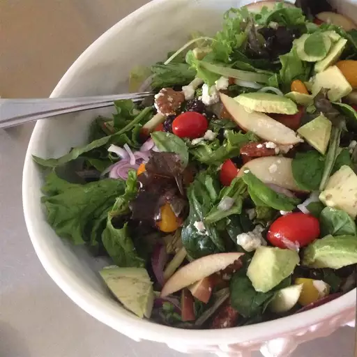

Harvest Salad

This harvest salad combines spinach with blue cheese, walnuts, and dried cranberries. If you can't find walnut oil, olive oil may be substituted.
Ingredients
- cup chopped walnuts
- bunch spinach, rinsed and torn into bite-size pieces
- tomatoes, chopped
- avocado, peeled, pitted, and diced
- cup dried cranberries
- cup crumbled blue cheese
- red onion, thinly sliced
- tablespoons red wine vinegar
Steps
- Preheat the oven to 375 degrees F (190 degrees C).
- Arrange walnuts in a single layer on a baking sheet. Toast in the preheated oven until begin to brown, about 5 minutes.
- Toss spinach, tomatoes, avocado, walnuts, cranberries, blue cheese, and red onion together in a large bowl.
- Whisk walnut oil, jam, vinegar, salt, and pepper together in a small bowl. Pour over salad and toss to coat just before serving.